Backdrop sheet
Every room a motif's fights are drawn in front of, once per element it is painted in, with the
brief it was painted from: the room's Draw on top and each element's
ElementDraw under its picture. A picture not painted yet is shown as the default
backdrop the fight really draws, dimmed and outlined in pink. Each picture links to the full
file under assets/motifs/.
Research Deck
aliens-outer-research-deck Aliens · outer chamber · 5 elementsA space station's research deck, with nobody in it: a broad floor of riveted metal deck plating, clear from the foreground to the far wall, under a high ceiling of exposed girders and ducting. Long light bars run along the ceiling and down the walls, with glowing strips set into the floor at its edges and banks of small indicator lights on the wall panels. A couple of lab tables stand against the side walls, well back from the open floor, each holding an experiment. In the far wall, in place of a door, is a small closed airlock hatch, about the height of a person.


Containment Deck
aliens-inner-containment-deck Aliens · inner chamber · 5 elementsA space station's containment deck, with nobody in it: a broad floor of riveted metal deck plating, clear from the foreground to the far wall, under a high ceiling of exposed girders and ducting. Long light bars run along the ceiling and down the walls, with glowing strips set into the floor at its edges and banks of small indicator lights on the wall panels. A couple of lab tables stand against the side walls, well back from the open floor, each holding an experiment. The far wall is dominated by a great closed blast door, many times the height of a person and filling much of the far side: two massive armoured leaves sealed together down the middle, banded with heavy plating and ringed by a thick frame of lights.


Engine Chamber
aliens-boss-engine-chamber Aliens · stairway · 5 elementsThe heart of an alien space station, with nobody in it: a broad floor of riveted metal deck plating, clear from the foreground to the far wall, under a vaulted ceiling of girders and ducting lined with light bars. A huge, strange machine stands centred against the far wall, plainly alien and half organic: ribbed, glistening, vein-like conduits and fleshy pods grown through and around metal housings, pulsing slowly with light. The two portals stand one on each side of the machine, flanking it.


Burnt Woods
animals-outer-burnt-woods Animals · outer chamber · 1 elementsA woodland after a wildfire, with nobody in it: a broad clearing of black ash and cinder, clear from the foreground to the far side. Charred trunks stand all around the edges, still smouldering, and the biggest of them are scored with deep claw marks higher than a person could reach. Cracked bones lie in the ash at the edges, and the grass beyond is burnt to stubble. At the far side, in a low bank of scorched earth, is a single small den mouth, barely taller than a person, framed by charred roots. Smoke and embers drift across the sky, and the woods are lit warm orange from below.

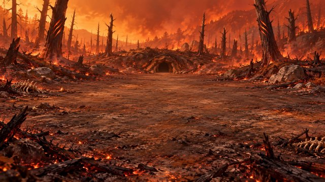
Frozen Taiga
animals-outer-frozen-taiga Animals · outer chamber · 1 elementsA clearing in a pine forest deep in winter, with nobody in it: a broad stretch of trampled snow, clear from the foreground to the far side. Dark pines heavy with snow and icicles stand around the edges, their lower bark rubbed and torn away, and tufts of grey fur are snagged on the branches. Paw prints far too large for any ordinary wolf cross the snow at the edges, and gnawed bones poke out of the drifts. At the far side, in a snowbank under the roots of a great fallen pine, is a single small den opening, barely taller than a person, fringed with icicles. The light is pale and blue.

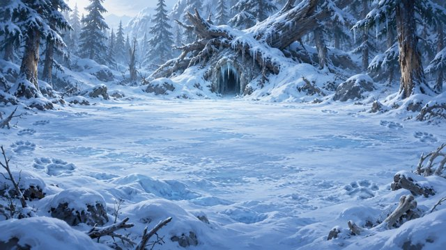
Thunder Crag
animals-outer-thunder-crag Animals · outer chamber · 1 elementsA bare rocky plateau high in the hills in a thunderstorm, with nobody in it: a broad stretch of flat stone and flattened grass, clear from the foreground to the far side, under dark storm clouds. Boulders the size of houses stand around the edges, scored with long parallel claw marks, and a lone dead tree split by lightning leans at one side. Gnawed bones lie scattered among the rocks. At the far side, in a low wall of tumbled stone, is a single small opening, barely taller than a person, and lightning is striking the rocks above it. The light is hot yellow.

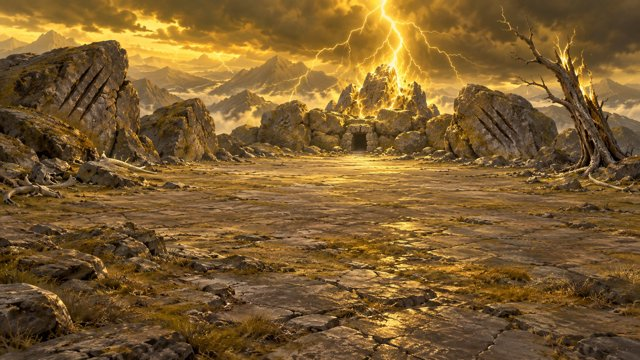
Mud Wallow
animals-outer-mud-wallow Animals · outer chamber · 1 elementsA boar wallow in a dense old forest, with nobody in it: a broad stretch of churned brown mud and trampled earth, clear from the foreground to the far side. Thick green trees crowd in around the edges, their trunks rubbed bare of bark at shoulder height and gashed by tusks, and the ground at the edges is rooted up into furrows and heaps. Hoofprints the size of shields are pressed into the mud. At the far side, under the roots of an enormous tree, is a single small opening dug into the earth, barely taller than a person. The light falls through the canopy dappled and green.

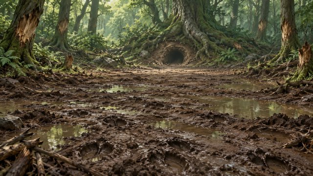
Roost Cavern
animals-outer-roost-cavern Animals · outer chamber · 1 elementsA vast cavern, with nobody in it: a broad, flat floor of pale stone, clear from the foreground to the far wall, under a ceiling so high it is lost in shadow. Stalactites hang from it in great clusters, the empty roost of something with wings, and the floor at the edges is streaked with droppings and littered with small bones. Moonlight falls in through a crack in the roof, and glowing purple fungus grows along the walls. In the far wall is a single small opening, barely taller than a person, ringed with glowing fungus. The whole cavern is lit violet.

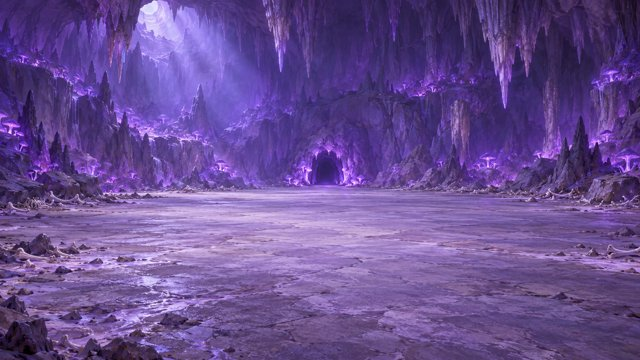
Burnt Woods Den
animals-inner-burnt-woods Animals · inner chamber · 1 elementsA woodland after a wildfire, with nobody in it: a broad clearing of black ash and cinder, clear from the foreground to the far side. Charred trunks stand all around the edges, still smouldering, and the biggest of them are scored with deep claw marks higher than a person could reach. Cracked bones lie in the ash at the edges. At the far side a hillside of scorched earth rises, and in it is a great den mouth, many times the height of a person and filling much of the far side, closed across by two massive charred trunks fallen together like a heavy double gate, embers glowing along their edges. Smoke and embers drift across the sky, and the woods are lit warm orange from below.

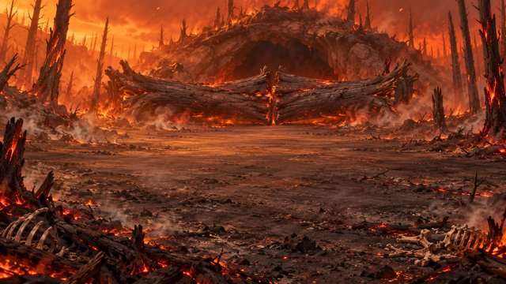
Frozen Taiga Den
animals-inner-frozen-taiga Animals · inner chamber · 1 elementsA clearing in a pine forest deep in winter, with nobody in it: a broad stretch of trampled snow, clear from the foreground to the far side. Dark pines heavy with snow and icicles stand around the edges, their lower bark rubbed and torn away, and tufts of grey fur are snagged on the branches. Gnawed bones poke out of the drifts. At the far side rises a ridge of ice-bound rock, and in it is a great den mouth, many times the height of a person and filling much of the far side, closed by two massive slabs of frost-covered stone leaned together like a heavy double gate, hung with icicles and half-buried in drifted snow. The light is pale and blue.

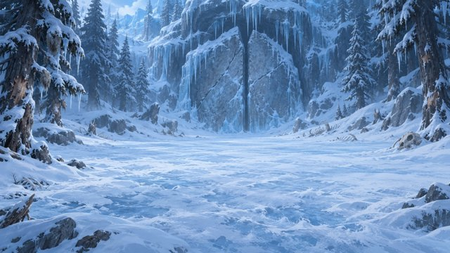
Thunder Crag Den
animals-inner-thunder-crag Animals · inner chamber · 1 elementsA bare rocky plateau high in the hills in a thunderstorm, with nobody in it: a broad stretch of flat stone and flattened grass, clear from the foreground to the far side, under dark storm clouds. Boulders the size of houses stand around the edges, scored with long parallel claw marks, and gnawed bones lie scattered among the rocks. The far side is a towering cliff of dark rock, and in it is a great den mouth, many times the height of a person and filling much of the far side, closed by two massive split slabs of rock leaned together like a heavy double gate, with lightning striking the cliff above it. The light is hot yellow.

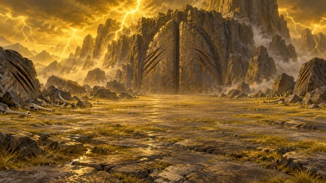
Mud Wallow Den
animals-inner-mud-wallow Animals · inner chamber · 1 elementsA boar wallow in a dense old forest, with nobody in it: a broad stretch of churned brown mud and trampled earth, clear from the foreground to the far side. Thick green trees crowd in around the edges, their trunks rubbed bare of bark at shoulder height and gashed by tusks, and hoofprints the size of shields are pressed into the mud. At the far side the roots of an enormous tree arch up out of a mud bank into a great opening, many times the height of a person and filling much of the far side, closed by two massive leaves of root-bound earth like a heavy double gate. The light falls through the canopy dappled and green.

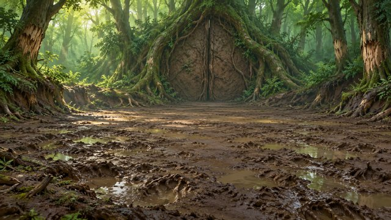
Deep Roost
animals-inner-roost-cavern Animals · inner chamber · 1 elementsA vast cavern, with nobody in it: a broad, flat floor of pale stone, clear from the foreground to the far wall, under a ceiling so high it is lost in shadow. Stalactites hang from it in great clusters, the empty roost of something with wings, and the floor at the edges is streaked with droppings and littered with small bones. Glowing purple fungus grows along the walls. In the far wall a great opening rises many times the height of a person and fills much of the far wall, closed by two massive curtains of fused stalactites hanging together like a heavy double gate, ringed with glowing fungus. The whole cavern is lit violet.

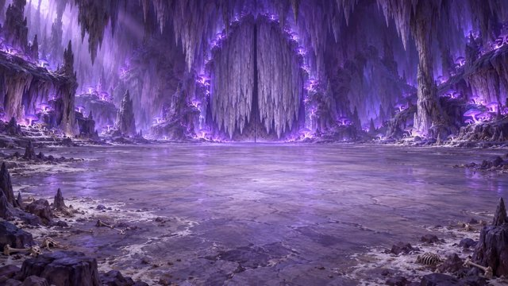
Bone Hill
animals-boss-bone-hill Animals · stairway · 5 elementsA vast open hilltop, with nobody in it: a broad stretch of trampled ground, clear from the foreground to the far side, open to the sky. At the centre of the far side rises a great mound of bones, many times the height of a person: ribs, antlers, tusks and skulls of every size, heaped up over years by whatever hunts here, and crowned by one colossal horned skull. Its foot spills out to either side and stops short of the open floor, and deep claw marks score the ground around it. The two portals stand one on each side of the mound, flanking it.

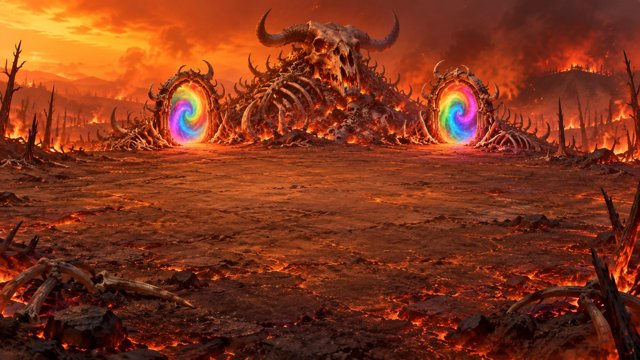

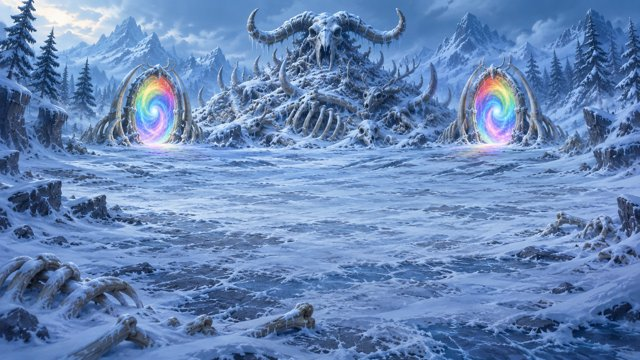

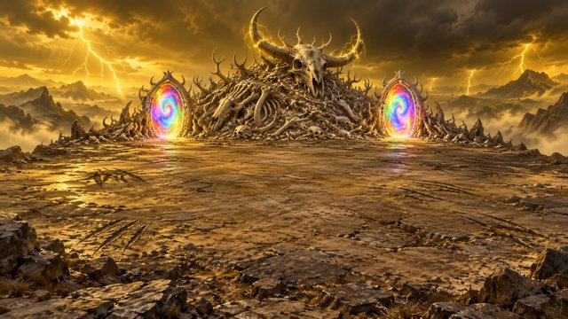

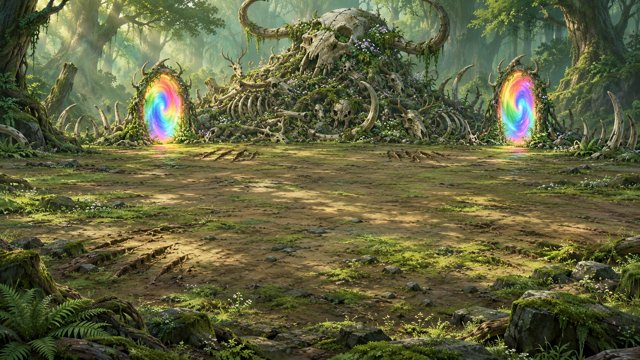

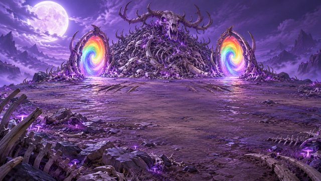
Canyon Roost
avians-outer-canyon-roost Avians · outer chamber · 5 elementsThe floor of a great canyon, with nobody in it: a broad, flat stretch of open ground, clear from the foreground to the far cliff. Towering canyon cliffs rise on every side and fill most of the picture, sheer and layered, climbing out of sight toward a narrow strip of sky. The cliff faces are riddled with roosting holes and ledges, and great nests of woven sticks, feathers and debris cluster around them at every height, all of them empty. In the far cliff face, in place of a door, is a single small crack in the rock, barely taller than a person.


Canyon Rift
avians-inner-canyon-rift Avians · inner chamber · 5 elementsThe floor of a great canyon, with nobody in it: a broad, flat stretch of open ground, clear from the foreground to the far cliff. Towering canyon cliffs rise on every side and fill most of the picture, sheer and layered, climbing out of sight toward a narrow strip of sky. The cliff faces are riddled with roosting holes and ledges, and great nests of woven sticks, feathers and debris cluster around them at every height, all of them empty. In the far cliff face, in place of a door, is a great crack splitting the rock, many times the height of a person and filling much of the far side, its edges jagged and its depths in shadow.


Statue Court
avians-boss-statue-court Avians · stairway · 5 elementsA high open court on a mountaintop, with nobody in it: a broad, flat paved floor, clear from the foreground to the far side, open to the sky with distant peaks beyond. A giant statue stands centred at the far side: a stylized birdman, upright on two legs, with a bird's head and beak and great wings half spread, not any particular kind of bird. It is plainly a statue — carved or built, never alive. The two portals stand one on each side of the statue, flanking it.


Ash Camp
barbarians-outer-ash-camp Barbarians · outer chamber · 1 elementsA barbarian war camp on volcanic badlands, with nobody in it: a broad stretch of trampled black ash and cinder, clear from the foreground to the far side. Hide tents and lean-tos stand along the edges, with weapon racks of notched axes and spears, smouldering fire pits ringed with stones, and furs hung to dry on poles. Lava seeps from fissures in the black rock at the edges of the camp and runs in glowing orange channels, and smoke and embers drift across the sky. At the far side, a palisade of sharpened stakes closes the camp, and in it is a single small, low gate of lashed timber, barely taller than a person. The camp is lit warm orange from below.

Fjord Camp
barbarians-outer-fjord-camp Barbarians · outer chamber · 1 elementsA barbarian camp on the frozen shore of a fjord, with nobody in it: a broad stretch of packed snow and ice, clear from the foreground to the far side. Longboats are hauled up on the shore at the edges, their prows carved and rimed with frost, and hide tents, drying racks and stacked barrels stand beside them. Ice coats the rocks, icicles hang from the boats and the tent poles, and grey cliffs rise beyond under a pale sky. At the far side stands a low timber hut half buried in snow, with a single small closed door, about the height of a person. The light is pale and blue.

Storm Steppe
barbarians-outer-storm-steppe Barbarians · outer chamber · 1 elementsA barbarian raiding camp on an open steppe in a thunderstorm, with nobody in it: a broad stretch of flattened grass, clear from the foreground to the far side, under dark storm clouds. Round felt tents, hitching posts with empty saddles, and poles hung with horsetail banners stand along the edges. Balls of yellow lightning drift and hover in the air above the camp, and lightning forks down onto the far plain. At the far side, a low wall of piled stones closes the camp, and in it is a single small doorway hung with a hide flap, barely taller than a person. The light is hot yellow.

Jungle Camp
barbarians-outer-jungle-camp Barbarians · outer chamber · 1 elementsA barbarian camp in a jungle clearing, with nobody in it: a broad stretch of trampled earth, clear from the foreground to the far side. Thick green vines, ferns, broad leaves and hanging creepers crowd in around the edges, and hide shelters are lashed between the great trunks, with carved totem poles, weapon racks and cold fire pits beside them. At the far side rises a low earthen mound covered in moss, and in it is a single small doorway framed with rough timbers, barely taller than a person. The light falls through the canopy dappled and green.

Barrow Field
barbarians-outer-barrow-field Barbarians · outer chamber · 1 elementsA barbarian burial ground on open moorland at night, with nobody in it: a broad stretch of short dark grass, clear from the foreground to the far side, bathed in moonlight. Grassy burial mounds and tall standing runestones stand around the edges, and glowing purple symbols are carved everywhere across the stones. At the far side, set into the largest mound, is a single small closed stone door, barely taller than a person, ringed with more glowing carvings. The whole field is lit violet by their light.

Ash Fortress
barbarians-inner-ash-fortress Barbarians · inner chamber · 1 elementsThe yard of a barbarian fortress on volcanic badlands, with nobody in it: a broad stretch of trampled black ash and cinder, clear from the foreground to the far wall. Hide tents, weapon racks of notched axes and spears, and smouldering fire pits stand along the edges, and lava seeps from fissures in the black rock and runs in glowing orange channels at the base of the walls. The far side is a towering wall of black stone and sharpened timber, and in it is a great closed gate, many times the height of a person and filling much of the far side: two massive leaves of scorched timber banded with iron, under a lintel hung with horns. Smoke and embers drift across the sky, and the yard is lit warm orange from below.

Glacier Hold
barbarians-inner-glacier-hold Barbarians · inner chamber · 1 elementsThe yard of a barbarian hold beneath a glacier, with nobody in it: a broad stretch of packed snow and ice, clear from the foreground to the far side. Longboats on rollers, hide tents, drying racks and stacked barrels stand along the edges, rimed with frost and hung with icicles. The far side is a towering wall of blue glacier ice, and cut into it is a great closed gate, many times the height of a person and filling much of the far side: two massive leaves of frost-blackened timber banded with iron, framed by carved beams and fringed with icicles. The light is pale and blue.

Storm Crag
barbarians-inner-storm-crag Barbarians · inner chamber · 1 elementsThe yard of a barbarian stronghold on a rocky crag in a thunderstorm, with nobody in it: a broad stretch of flattened grass and bare rock, clear from the foreground to the far side, under dark storm clouds. Round felt tents, hitching posts and poles hung with horsetail banners stand along the edges. The far side is a towering stockade of lashed logs topped with iron spikes, and in it is a great closed gate, many times the height of a person and filling much of the far side: two massive leaves of lashed logs bound with iron. Balls of yellow lightning drift above the yard, and lightning strikes the iron spikes along the stockade. The light is hot yellow.

Jungle Stockade
barbarians-inner-jungle-stockade Barbarians · inner chamber · 1 elementsThe yard of a barbarian stockade deep in a jungle, with nobody in it: a broad stretch of trampled earth, clear from the foreground to the far side. Hide shelters, carved totem poles and weapon racks stand along the edges, and thick green vines, ferns and hanging creepers crowd in over the walls. The far side is a towering wall of whole tree trunks lashed together, and in it is a great closed gate, many times the height of a person and filling much of the far side: two massive leaves of rough-hewn trunks, overgrown with moss and vines. The light falls through the canopy dappled and green.

Great Barrow
barbarians-inner-great-barrow Barbarians · inner chamber · 1 elementsThe foot of a great barbarian burial mound on open moorland at night, with nobody in it: a broad stretch of short dark grass, clear from the foreground to the far side, bathed in moonlight. Tall standing runestones stand around the edges, and glowing purple symbols are carved everywhere across them. The far side is the face of an enormous barrow hill, and set into it is a great closed stone door, many times the height of a person and filling much of the far side: two massive slabs under a heavy lintel stone, covered in dense glowing carvings. The whole field is lit violet by their light.

Skull Throne
barbarians-boss-skull-throne Barbarians · stairway · 5 elementsA barbarian chieftain's court in the open air, with nobody in it: a broad stretch of trampled ground, clear from the foreground to the far side. A massive, crude throne stands centred at the far side, built of heavy timber and rough stone and draped in furs, and decorated all over with animal skulls — bear, elk, ram, wolf — with great horns and antlers rising from its back. Weapon racks, banners of hide and trophy poles hung with more skulls stand along the edges. The two portals stand one on each side of the throne, flanking it, each framed by a rough arch of heavy unworked stone.


Hunting Ground
big-cats-outer-hunting-ground Big Cats · outer chamber · 5 elementsA great-cat hunting ground, with nobody in it: a broad open stretch of trampled grass and packed earth, clear from the foreground to the far side, bordered by thorn scrub, fallen logs and low stone outcrops. The middle is a wide stalking lane scraped by enormous claw marks. Bones, shed fur, scratched bark and broken antlers lie at the edges, and several tree trunks have deep gouges cut high into them. At the far side, in a low wall of tangled brush and stone, is a single small closed gate made from rough timbers bound with hide, barely taller than a person.

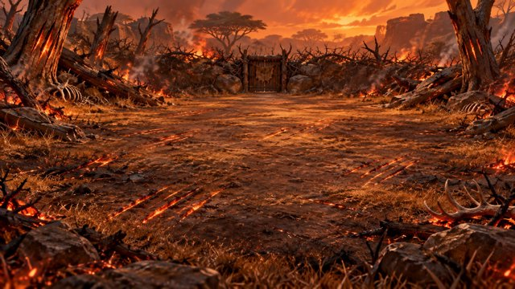

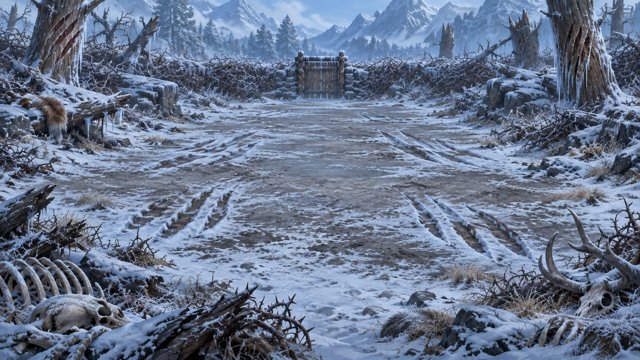

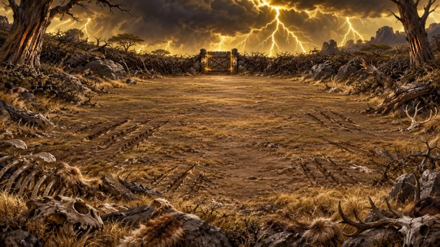

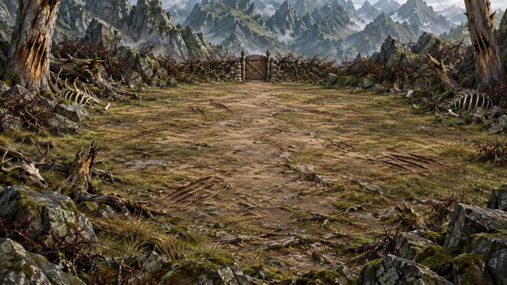

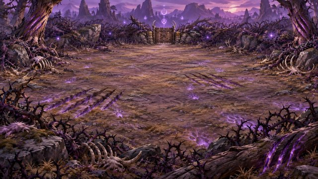
Den Mouth
big-cats-inner-den-mouth Big Cats · inner chamber · 5 elementsA vast den mouth for great cats, with nobody in it: a broad cavern floor of worn stone and hard-packed dirt, clear from the foreground to the far wall, under a high natural roof ribbed with roots and stone ledges. The edges of the chamber are nested with old hides, dry grass, gnawed bones and claw-scarred posts driven into cracks in the rock. Along the walls are ledges and dark alcoves where something large could sleep, but the centre remains open. The far wall is dominated by a great closed double gate of dark timber and stone, many times the height of a person, framed by an arch gouged with huge claw marks.

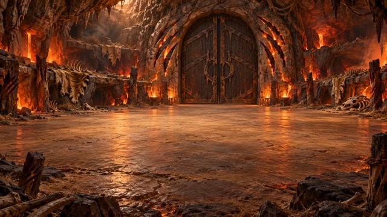

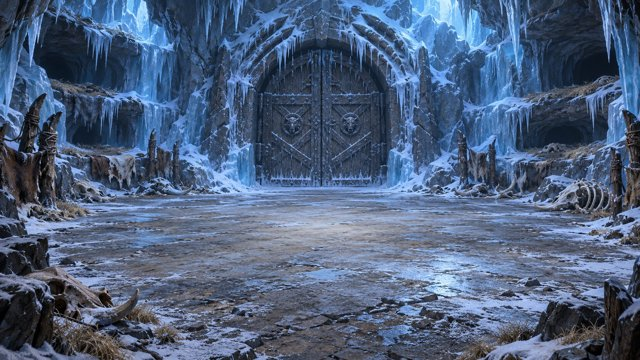

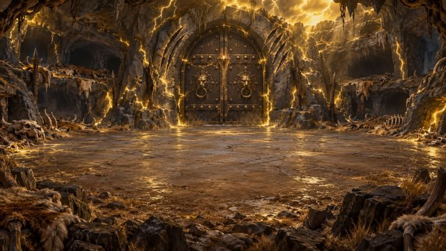

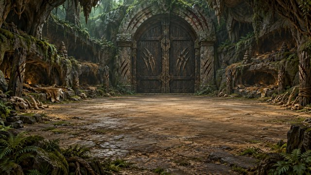

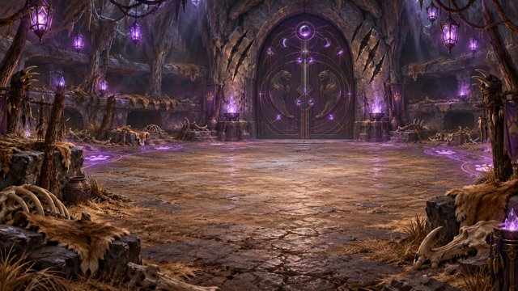
Pride Throne
big-cats-boss-pride-throne Big Cats · stairway · 5 elementsA great-cat pride throne, with nobody in it: a broad open floor of polished stone and worn earth, clear from the foreground to the far side, under a high vaulted roof of rock and tangled roots. At the centre of the far side rises a low throne of layered stone slabs, hides and claw-marked timber, broad enough for a huge cat to sprawl across. The two portals stand one on each side of the throne, flanking it. Around the edges are trophies of the hunt: broken antlers, old collars, cracked shields, hanging hides and heaps of bones kept well back from the open floor.

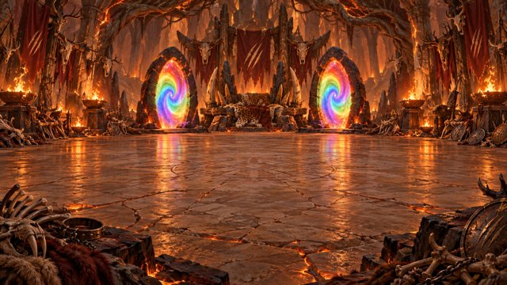

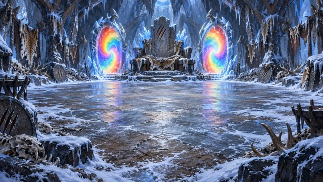

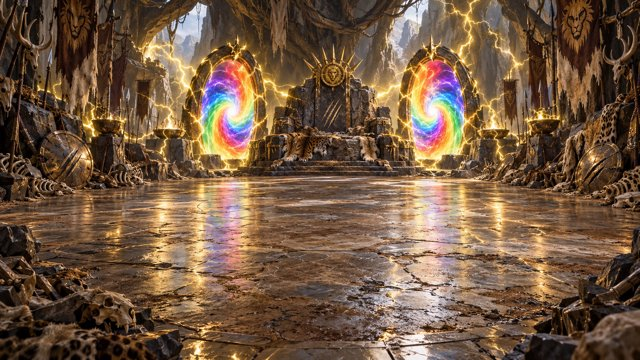

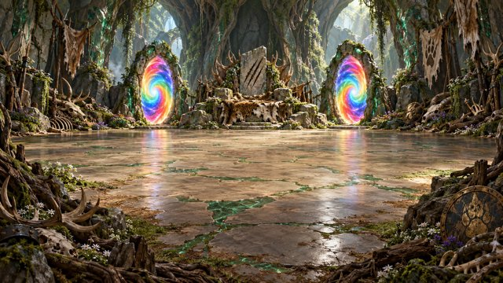

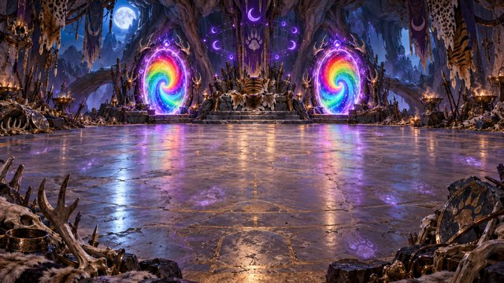
Alley Court
cat-people-outer-alley-court Cat-people · outer chamber · 5 elementsA cat-people alley court, with nobody in it: a broad paved courtyard, clear from the foreground to the far wall, enclosed by tall close-set buildings with balconies, awnings, laundry ropes and narrow roof walks above. The centre is open for a duel, while the edges are crowded with stacked crates, fish baskets, rain barrels, folded market stalls, scratching posts and low sleeping mats. Claw marks run up doorframes and across balcony rails. At the far side, between two leaning walls, is a single small closed door of dark wood with a low lintel, about the height of a person.

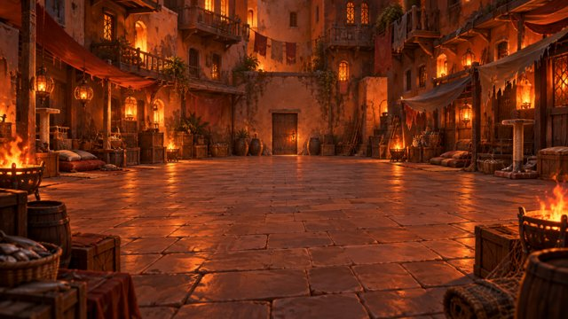

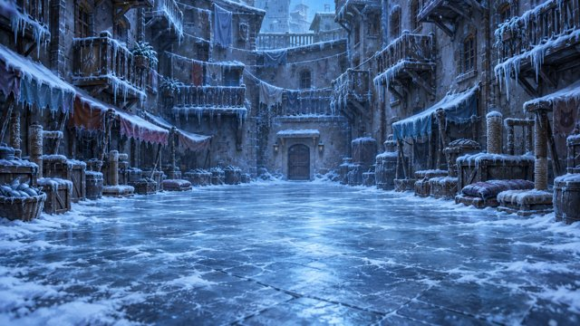

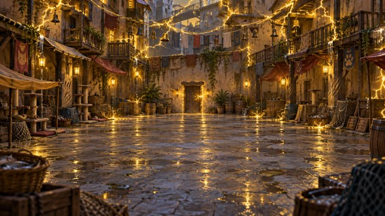

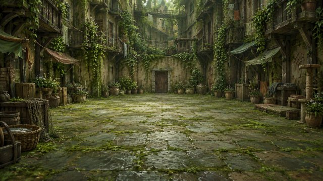

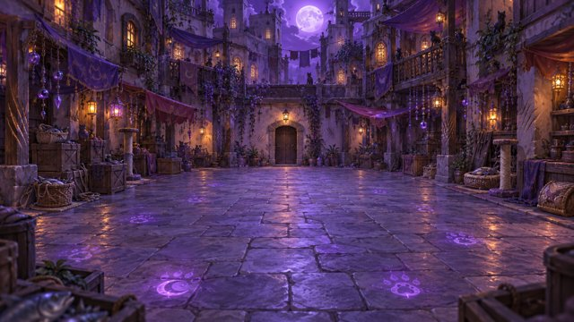
Dueling House
cat-people-inner-dueling-house Cat-people · inner chamber · 5 elementsA cat-people dueling house, with nobody in it: a broad polished floor of dark wood, clear from the foreground to the far wall, inside a high hall with rafters, hanging cloths and narrow balconies running along both sides. Weapon racks, practice posts wrapped in rope, claw-scarred shields, folded jackets and water bowls line the walls, all pushed well back from the centre. The far wall is dominated by a great closed double door of lacquered wood, many times the height of a person, banded with metal and carved with sweeping claw patterns that contain no letters.

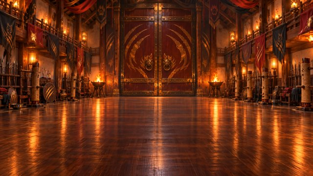

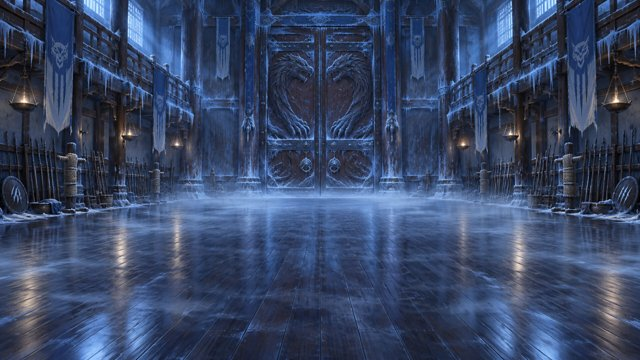

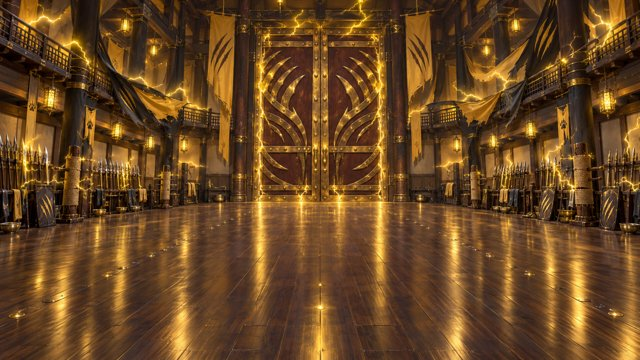

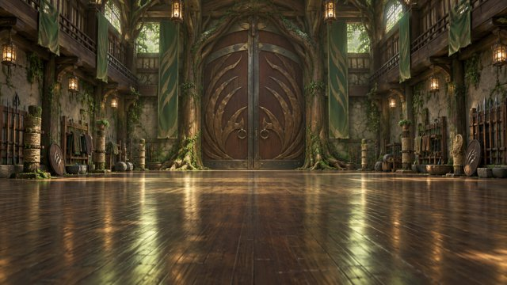

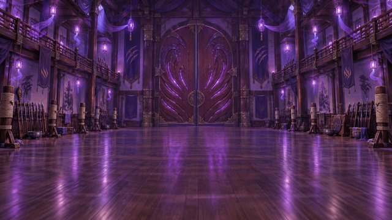
Matriarch Court
cat-people-boss-matriarch-court Cat-people · stairway · 5 elementsA cat-people matriarch's court, with nobody in it: a broad open hall of polished stone and woven rugs, clear from the foreground to the far side, under a high roof of dark beams and layered hanging cloth. At the centre of the far side is a raised dais with a low cushioned seat, bowls, rings, folded wraps and claw-scarred armrests arranged for an absent ruler. The two portals stand one on each side of the dais, flanking it. Along the side walls are balconies, bead curtains, weapon racks and shelves of bright trinkets, all kept back from the open floor.

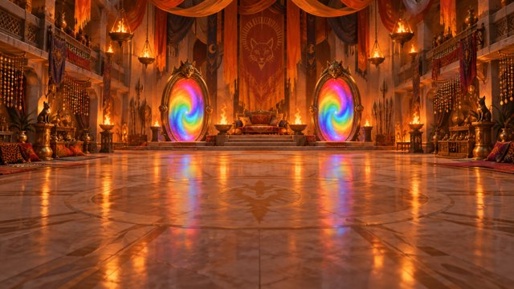

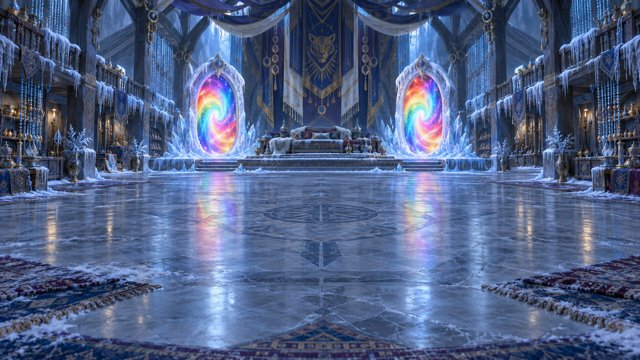

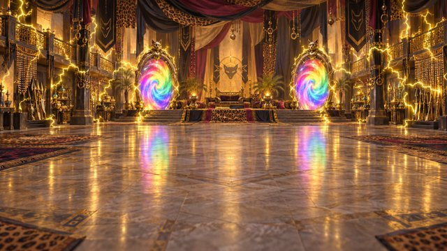

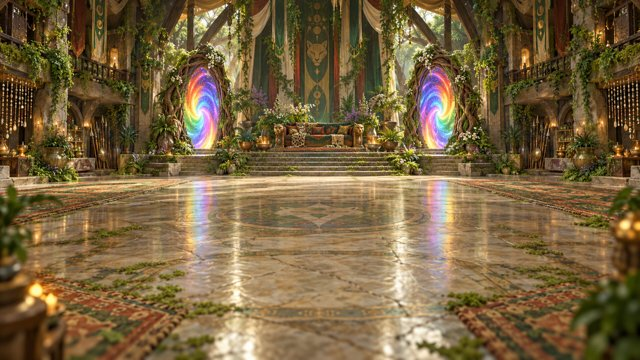

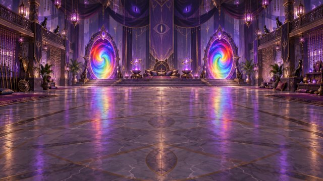
Hatchery Ledge
draconics-outer-hatchery-ledge Draconics · outer chamber · 5 elementsA draconic hatchery ledge, with nobody in it: a broad stone platform inside an enormous cavern, clear from the foreground to the far wall, under a high roof lost in shadow. The edges are lined with empty egg shells, claw-scored nesting pits, shed scales, gnawed bones and piles of broken stone warmed smooth by old bodies. Wing scratches mark the walls and soot darkens the roof. At the far side, in the cavern wall, is a single small closed stone door, about the height of a person, banded with dark metal and dwarfed by the cave around it.

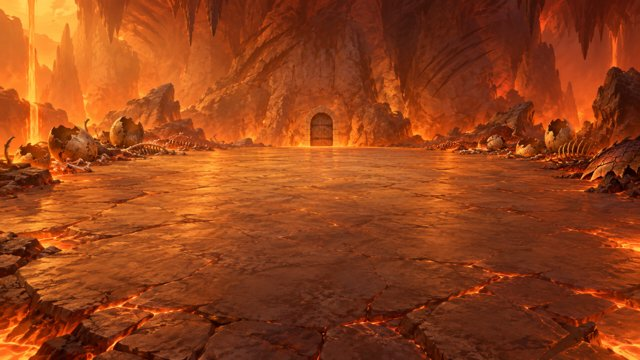

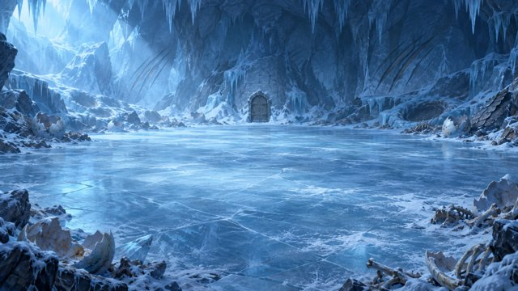

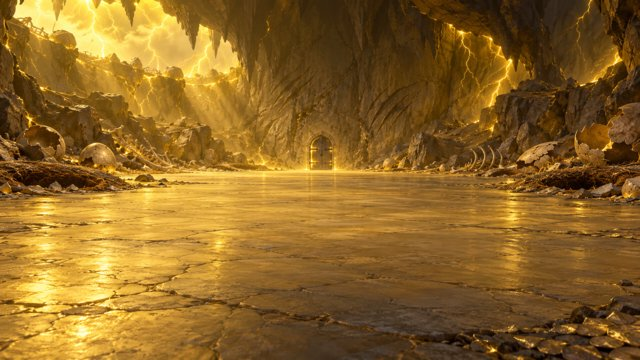

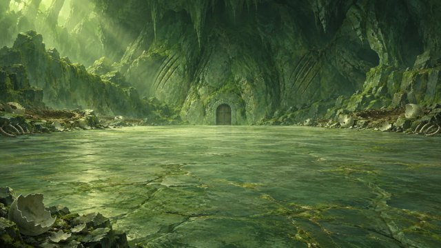

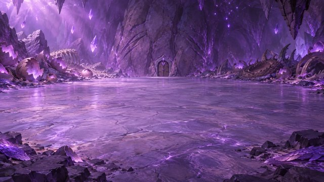
Hoard Vault
draconics-inner-hoard-vault Draconics · inner chamber · 5 elementsA draconic hoard vault, with nobody in it: a broad floor of worn stone, clear from the foreground to the far wall, inside a vast vaulted cavern reinforced by ancient pillars. Treasure lies at the edges rather than the centre: heaps of coins, cracked shields, torn banners, broken crowns, metal cups, gemstones and old bones shoved against the walls and under ledges. Long drag marks and claw grooves cross the stone. The far wall is dominated by a great closed double door of black stone and banded metal, many times the height of a person, carved with wing and horn patterns that contain no writing.


Crown Roost
draconics-boss-crown-roost Draconics · stairway · 5 elementsA draconic crown roost, with nobody in it: a vast open cavern terrace with a broad clear floor of dark stone, high above a distant drop, under a roof of jagged arches. At the centre of the far side rises a throne-like roost of piled stone, old shields, huge ribs and broken crowns, built for a dragon rather than a person. The two portals stand one on each side of the roost, flanking it. Along the edges are treasure drifts, shed scales, torn banners and claw-marked pillars, all well back from the open floor.


Hill Stones
dwarves-outer-hill-stones Dwarves · outer chamber · 5 elementsA broad grassy saddle between rolling hills, with nobody in it: a stretch of short turf and bare rock, clear from the foreground to the far side, with hill after hill rising behind into the distance. Weathered boulders, cairns of stacked stones and the mouths of old mine adits cut into the hillsides line the edges, with a few abandoned dwarven tools — a pick, a cart on a short run of rail, a coil of rope — left beside them. At the far side stands the room's door: two small standing stones capped with a third laid across them, a squat stone doorway barely taller than a person, cut square and carved with plain dwarven bands.


Hill Gate
dwarves-inner-hill-gate Dwarves · inner chamber · 5 elementsA broad valley floor among steep hills, with nobody in it: a stretch of short turf and bare rock, clear from the foreground to the far side, with high hills rising all around. Weathered boulders, cairns of stacked stones and the mouths of old mine adits cut into the hillsides line the edges, with abandoned dwarven tools, ore carts and stacked timber props left beside them. At the far side stands the room's door: two enormous standing stones capped with a third laid across them, a towering stone doorway many times the height of a person and filling much of the far side, cut square and carved deep with dwarven knotwork and bands.


Stone Throne
dwarves-boss-stone-throne Dwarves · stairway · 5 elementsA high flat hilltop, with nobody on it: a broad stretch of short turf and laid stone, clear from the foreground to the far side, with rolling hills falling away into the distance behind. A giant stone throne stands centred at the far side, carved square and massive from a single outcrop of rock, its back rising far above head height, with deep-cut dwarven knotwork and bands along its arms and back. Cairns and weathered boulders stand around the edges. The two portals stand one on each side of the throne, flanking it, each framed by a pair of standing stones capped with a third laid across them.


Forest Arch
elves-outer-forest-arch Elves · outer chamber · 5 elementsA broad glade deep in an ancient forest, with nobody in it: a stretch of soft open ground, clear from the foreground to the far side, ringed by enormous old trees whose trunks rise out of sight and whose canopy closes over the top of the picture. Ferns, fallen logs, slender elven lanterns hung from low branches and a few graceful benches of shaped living wood stand along the edges. At the far side stands the room's door: a single small natural arch, barely taller than a person, standing alone at the edge of the trees.


Forest Gate
elves-inner-forest-gate Elves · inner chamber · 5 elementsA vast glade deep in an ancient forest, with nobody in it: a stretch of soft open ground, clear from the foreground to the far side, ringed by enormous old trees whose trunks rise out of sight and whose canopy closes over the top of the picture. Ferns, fallen logs, slender elven lanterns hung from low branches and graceful benches of shaped living wood stand along the edges. At the far side stands the room's door: a single great natural arch, many times the height of a person and filling much of the far side, rising between the trees.


Living Throne
elves-boss-living-throne Elves · stairway · 5 elementsThe heart of an ancient forest, with nobody in it: a broad glade of soft open ground, clear from the foreground to the far side, ringed by the oldest and largest trees in the forest, their canopy closing high overhead. A throne stands centred at the far side, grown rather than built: living trunks, branches and vines woven together into a tall, graceful seat with a high back that rises into a crown of leaves and blossoms. The two portals stand one on each side of the throne, flanking it, each framed by a natural arch.


Tinker Studio
goblins-outer-tinker-studio Goblins · outer chamber · 5 elementsA goblin tinker's studio hall, with nobody in it: a broad floor of scuffed planks and patched flagstones, clear from the foreground to the far wall, under high rafters hung with pulleys, chains and half-finished contraptions. It is a mess. Gears, cogs, springs, bent rivets and loose bolts are strewn across the floor at the edges; workbenches along both side walls are buried in scavenged scrap, disassembled clockwork, lengths of pipe and tools nobody put back. Crates of salvage are stacked unevenly against the walls, and a crooked crane arm leans out over a heap of parts. Nothing matches and everything was something else first.


Bomber Studio
goblins-inner-bomber-studio Goblins · inner chamber · 5 elementsA goblin bomb-maker's studio hall, with nobody in it: a broad floor of scuffed planks and patched flagstones, clear from the foreground to the far wall, under high rafters hung with chains and half-built casings. It is a mess. Bomb parts are scattered everywhere — round iron shells, fuse cord, powder kegs, cracked casings and loose timers — along with nails, shrapnel, broken glass and other sharp scrap heaped in buckets and spilled across the floor at the edges. Masses of unused wire lie in snarled tangles on the workbenches along both side walls and trail down onto the floor. Nothing is stored safely and everything looks like it could go off.


Throne Room
goblins-boss-throne-room Goblins · stairway · 5 elementsA goblin king's throne room, with nobody in it: a broad floor of scuffed planks and patched flagstones, clear from the foreground to the far wall, under high rafters. A bronze throne stands centred against the far wall, dented and patched together from scrap. The two portals stand one on each side of the throne, flanking it. It is still a goblin's hall: heaps of garbage are piled up beside the throne and in the corners and along the walls — broken gears, bent pipe, cracked crates, rags, bones and scavenged junk of every kind.


Volcano Quarry
golems-outer-volcano-quarry Golems · outer chamber · 1 elementsA quarry terrace cut into the flank of a volcano, with nobody in it: a broad flat floor of black rock, clear from the foreground to the far side, with the mountain rising steep behind under a smoky sky. Veins of glowing orange run through the black rock of the quarry walls like seams of molten ore. Dwarven quarry works line the edges: timber cranes with chains, rough-cut blocks stacked on wooden sledges, abandoned picks and chisels, and steps cut square into the rock. At the far side, cut into the quarry face, is a single small square doorway, barely taller than a person, framed with plain carved dwarven bands. Smoke and embers drift across the sky, and the quarry is lit warm orange from below.

Glacier Pass
golems-outer-glacier-pass Golems · outer chamber · 1 elementsA high mountain pass beside a glacier, with nobody in it: a broad flat stretch of packed snow and bare grey rock, clear from the foreground to the far side, with snow peaks rising all around. Veins of glowing pale blue run through the rock of the mountainsides and into the glacier's ice. Old dwarven waystones carved with plain bands stand along the edges of the pass, half-buried in snow, beside a toppled ore cart. At the far side, cut into the mountainside, is a single small square doorway, barely taller than a person, fringed with icicles. The light is pale and blue.

Storm Peak
golems-outer-storm-peak Golems · outer chamber · 1 elementsA broad flat ledge near a mountain summit in a thunderstorm, with nobody in it: bare dark basalt, clear from the foreground to the far side, under black storm clouds. Veins of glowing yellow run through the basalt like seams of ore. Tall dwarven lightning rods of iron and copper stand along the edges of the ledge, anchored in carved stone sockets and wired to each other with heavy cable, and lightning is striking them. At the far side, cut into the peak, is a single small square doorway, barely taller than a person, banded with iron. The light is hot yellow.

Moss Gorge
golems-outer-moss-gorge Golems · outer chamber · 1 elementsThe floor of a deep mountain gorge, with nobody in it: a broad flat stretch of turf and stone, clear from the foreground to the far side, between sheer rock walls that climb out of sight. Veins of glowing green run through the rock walls, and moss, ferns and hanging creepers cover them. An old dwarven mine rail runs along one edge on timber sleepers, with a rusted cart standing on it, and a thin waterfall falls down the far wall into a pool at its side. At the far side, cut into the gorge wall, is a single small square doorway, barely taller than a person, overgrown with moss. The light is dim and green.

Crystal Ridge
golems-outer-crystal-ridge Golems · outer chamber · 1 elementsA broad flat mountain ridge at night, with nobody on it: a stretch of bare rock and short grass, clear from the foreground to the far side, under a starry sky with peaks falling away on either side. Veins of glowing purple run through the rock, and clusters of purple crystal break out of it along the edges. Tall carved dwarven obelisks stand at the edges of the ridge, cut with plain bands that glow faintly violet. At the far side, cut into a rock outcrop, is a single small square doorway, barely taller than a person, ringed with crystal. The whole ridge is lit violet.

Magma Forge
golems-inner-magma-forge Golems · inner chamber · 1 elementsA vast cavern forge deep under a volcano, with nobody in it: a broad flat floor of black stone, clear from the foreground to the far wall, under a cavern roof lost in smoke. Veins of glowing orange run through the cavern walls, and a river of lava flows in a carved channel along one side. Dwarven forge works line the edges: anvils the size of wagons, great hoists of chain and timber, crucibles on iron frames, and stacked plates of cast stone and metal waiting to be fitted. In the far wall is a great closed dwarven gate, many times the height of a person and filling much of the far wall: two massive leaves of black stone carved deep with dwarven knotwork, under a heavy square lintel, its seams glowing orange. The cavern is lit warm orange from below.

Ice Cavern
golems-inner-ice-cavern Golems · inner chamber · 1 elementsA vast cavern of ice and rock inside a glacier, with nobody in it: a broad flat floor of frozen lake, clear from the foreground to the far wall, under a vaulted roof of blue ice hung with icicles. Veins of glowing pale blue run through the rock and the ice of the walls. Old dwarven work stands frozen at the edges: carved pillars holding up the roof, a toppled ore cart, and chains hanging from iron rings set in the rock. In the far wall is a great closed dwarven gate, many times the height of a person and filling much of the far wall: two massive leaves of grey granite carved deep with dwarven knotwork, under a heavy square lintel furred with frost. The light is pale and blue.

Lodestone Cavern
golems-inner-lodestone-cavern Golems · inner chamber · 1 elementsA vast cavern of dark basalt, with nobody in it: a broad flat floor of stone, clear from the foreground to the far wall, under a high roof of columnar basalt. Veins of glowing yellow run through the rock and crackle with small arcs. Dwarven copper conduits run along the walls between carved pillars, feeding great copper coils that stand at the edges, and lumps of lodestone hang in iron cradles. In the far wall is a great closed dwarven gate, many times the height of a person and filling much of the far wall: two massive leaves of dark basalt banded with copper and carved deep with dwarven knotwork, with arcs running along its bands. The light is hot yellow.

Root Grotto
golems-inner-root-grotto Golems · inner chamber · 1 elementsA vast grotto deep under a mountain, with nobody in it: a broad flat floor of packed earth and stone, clear from the foreground to the far wall, under a high cavern roof. Veins of glowing green run through the rock walls, great roots from the forest far above break through the roof and hang down into the cavern, and moss and pale ferns grow across the stone. Old dwarven mine works stand along the edges: timber props, rails, rusted carts and a waterwheel turned by an underground stream. In the far wall is a great closed dwarven gate, many times the height of a person and filling much of the far wall: two massive leaves of carved stone wound about with roots and moss. The light is dim and green.

Geode Hall
golems-inner-geode-hall Golems · inner chamber · 1 elementsA vast cavern inside a giant geode, with nobody in it: a broad flat floor of smoothed stone laid by dwarves, clear from the foreground to the far wall, under a vaulted roof lined everywhere with great clusters of purple crystal. Veins of glowing purple run through the rock between the crystals. Carved dwarven pillars stand along the edges, cut with plain bands that glow faintly violet. In the far wall is a great closed dwarven gate, many times the height of a person and filling much of the far wall: two massive leaves of dark stone inlaid with crystal and carved deep with dwarven knotwork. The whole hall is lit violet.

Maker's Hall
golems-boss-makers-hall Golems · stairway · 5 elementsA great dwarven hall carved into the heart of a mountain, with nobody in it: a broad flat floor of laid stone, clear from the foreground to the far wall, under a high vaulted roof held up by massive carved pillars. This is where golems are made. At the centre of the far side stands a colossal empty assembly cradle, many times the height of a person: a frame of carved stone and iron scaffolding hung with chains and hooks, built to hold a giant body while it is put together, with nothing in it. Glowing veins run out of the walls and across the floor in carved channels, all converging on the cradle. Stacked plates of stone and metal and great carving tools stand along the edges. The two portals stand one on each side of the cradle, flanking it, each framed by a carved dwarven arch of square stone deep with knotwork.


Termite Savanna
insects-outer-termite-savanna Insects · outer chamber · 1 elementsA scorched savanna, with nobody in it: a broad stretch of baked red earth and dry grass, clear from the foreground to the far side. Termite mounds as tall as towers rise around the edges, their sides ridged and pocked with small vents, heat shimmering off them and orange light glowing from inside. Shed wings and empty husks lie in drifts at their feet. At the far side, in the base of the largest mound, is a single small opening, barely taller than a person. Heat haze, smoke and embers drift across the sky, and the savanna is lit warm orange.

Frost Webs
insects-outer-frost-webs Insects · outer chamber · 1 elementsA frozen forest glade, with nobody in it: a broad stretch of snow, clear from the foreground to the far side. Bare black trees stand around the edges, and between them hang enormous spider webs, every strand rimed with frost so the webs glitter like lace. Bundles wrapped in silk hang from the branches, and icicles drip from the strands. At the far side, between two trees, is a single small doorway of webbing frozen stiff, barely taller than a person. The light is pale and blue.

Storm Marsh
insects-outer-storm-marsh Insects · outer chamber · 1 elementsA reed marsh in a thunderstorm, with nobody in it: a broad stretch of flattened reeds and shallow water, clear from the foreground to the far side, under dark storm clouds. Tall reeds and cattails crowd the edges, and empty husks shed by something enormous cling to the stems, split open down the back. At the far side, in a low bank of dried mud, is a single small opening, barely taller than a person, and lightning is striking the reeds beside it. The light is hot yellow.

Beetle Warren
insects-outer-beetle-warren Insects · outer chamber · 1 elementsA vast chamber dug deep underground, with nobody in it: a broad floor of packed earth, clear from the foreground to the far wall, under a high rough ceiling hung with roots. The walls are gouged all over with the marks of mandibles, and balls of rolled dung the size of boulders sit along the edges among heaps of loose soil and shed carapace. In the far wall is a single small opening, barely taller than a person, framed with packed clay. The light is dim and green, from glowing moss on the walls.

Paper Hive
insects-outer-paper-hive Insects · outer chamber · 1 elementsThe inside of an enormous wasp nest, with nobody in it: a broad floor of layered grey paper, clear from the foreground to the far wall, under a high domed ceiling of the same papery layers. The walls are lined with hexagonal comb, every cell empty, and torn scraps of paper and dropped wings lie at the edges. Purple light glows from deep inside the comb. In the far wall is a single small hexagonal opening, barely taller than a person. The whole nest is lit violet.

Termite Spire
insects-inner-termite-savanna Insects · inner chamber · 1 elementsA scorched savanna, with nobody in it: a broad stretch of baked red earth and dry grass, clear from the foreground to the far side. Termite mounds as tall as towers rise around the edges, their sides ridged and pocked with small vents, heat shimmering off them and orange light glowing from inside, and shed wings lie in drifts at their feet. At the far side rises a vast termite spire, and in its base is a great opening, many times the height of a person and filling much of the far side, closed by two massive leaves of hardened red clay like a heavy double gate, orange light glowing at its seams. Heat haze, smoke and embers drift across the sky, and the savanna is lit warm orange.

Frost Web Gate
insects-inner-frost-webs Insects · inner chamber · 1 elementsA frozen forest glade, with nobody in it: a broad stretch of snow, clear from the foreground to the far side. Bare black trees stand around the edges, and between them hang enormous spider webs, every strand rimed with frost so the webs glitter like lace, with bundles wrapped in silk hanging from the branches. At the far side two enormous trees stand close together, and between them is a great gate of webbing, many times the height of a person and filling much of the far side, two thick frozen sheets of silk closed across it like a heavy double gate, glittering with frost. The light is pale and blue.

Storm Marsh Gate
insects-inner-storm-marsh Insects · inner chamber · 1 elementsA reed marsh in a thunderstorm, with nobody in it: a broad stretch of flattened reeds and shallow water, clear from the foreground to the far side, under dark storm clouds. Tall reeds and cattails crowd the edges, and empty husks shed by something enormous cling to the stems. The far side is a towering wall of woven reeds and dried mud, built up like a nest, and in it is a great closed gate, many times the height of a person and filling much of the far side: two massive leaves of bound reed, with lightning striking the wall above it. The light is hot yellow.

Beetle Warren Gate
insects-inner-beetle-warren Insects · inner chamber · 1 elementsA vast chamber dug deep underground, with nobody in it: a broad floor of packed earth, clear from the foreground to the far wall, under a high rough ceiling hung with roots. The walls are gouged all over with the marks of mandibles, and balls of rolled dung the size of boulders sit along the edges among heaps of loose soil. In the far wall a great opening rises many times the height of a person and fills much of the far wall, closed by two massive plates of shed beetle shell set into the clay like a heavy double gate. The light is dim and green, from glowing moss on the walls.

Paper Hive Gate
insects-inner-paper-hive Insects · inner chamber · 1 elementsThe inside of an enormous wasp nest, with nobody in it: a broad floor of layered grey paper, clear from the foreground to the far wall, under a high domed ceiling of the same papery layers. The walls are lined with hexagonal comb, every cell empty, with purple light glowing from deep inside it. In the far wall is a great hexagonal opening, many times the height of a person and filling much of the far wall, closed by two massive leaves of layered paper like a heavy double gate, purple light glowing at its seams. The whole nest is lit violet.

Brood Chamber
insects-boss-brood-chamber Insects · stairway · 5 elementsThe heart of a colossal hive, with nobody in it: a broad, flat floor, clear from the foreground to the far wall, under a vaulted ceiling of hexagonal comb rising out of sight. At the centre of the far side stands a great column of comb, many times the height of a person, running from floor to ceiling, every cell packed with pale glossy eggs. Its foot spreads out to either side and stops short of the open floor. The two portals stand one on each side of the column, flanking it, each framed by an arch of comb.


Smoky Laboratory
magic-users-outer-smoke-laboratory Magic-users · outer chamber · 5 elementsA magician's laboratory, with nobody in it: a broad floor of worn flagstones, clear from the foreground to the far wall, under a low ceiling of heavy dark beams, lower than any other room in the realm though still well above head height. Smoke hangs in a haze beneath the beams and drifts in slow layers across the room, softening everything behind it. The laboratory is sparsely kept: a few plain workbenches stand against the side walls with only a handful of vessels and tools on each, and the edges of the floor are bare but for a stool or two. In the far wall is a single small plain door, closed, about the height of a person.


Grand Laboratory
magic-users-inner-grand-laboratory Magic-users · inner chamber · 5 elementsA great magician's laboratory hall, with nobody in it: a broad floor of polished flagstones, clear from the foreground to the far wall, under a high vaulted ceiling two or three storeys up. Tall bookshelves line both side walls from floor to vault, packed with books, and tall stained-glass windows rise between them, throwing colored light across the floor. Benches along the edges are crowded with magical equipment of every kind, books lie open on lecterns and side tables, and scrolls hang down the shelves and from the rafters, their writing too small and distant to read. In the far wall is a great closed door, many times the height of a person and filling much of the far wall: two heavy carved leaves under a massive stone arch.


Gem Altar
magic-users-boss-gem-altar Magic-users · stairway · 5 elementsA great bare sanctum, with nobody in it: a broad floor of smooth dark stone, clear from the foreground to the far wall, under a high vaulted ceiling. There is no furniture, equipment or clutter of any kind anywhere in the room. Glowing pictograms, symbols rather than writing, are carved across the whole floor in rings and lines, and the same glowing pictograms cover the walls from floor to vault. At the centre of the far side stands an altar: a tall pedestal of carved green jade holding up a great faceted gem, light swirling slowly inside it. The two portals stand one on each side of the altar, flanking it, each framed in ornate bronze cast with a dragon's head at its crown, the dragon's eyes glowing.


Holding Ward
mutants-outer-holding-ward Mutants · outer chamber · 5 elementsA laboratory holding ward, with nobody in it: a broad floor of cracked white tile, clear from the foreground to the far wall, under a high ceiling of exposed pipes and hanging surgical lamps. The tile is stained and the drains in the floor are clogged with something dark. Along both side walls stand steel gurneys with torn leather straps, empty cages with their bars bent outward, and tall glass specimen jars holding floating organs and a single severed hand. Rubber tubing runs from the jars up the walls and disappears into fleshy growths that have spread across the tiles like a skin, veined and faintly glistening. In the far wall is a single small steel door, closed, about the height of a person, with a narrow wired-glass window smeared from the inside.


Growth Lab
mutants-inner-growth-lab Mutants · inner chamber · 5 elementsA great laboratory hall where flesh is grown, with nobody in it: a broad floor of stained steel grating and cracked tile, clear from the foreground to the far wall, under a high ceiling two or three storeys up, crossed by catwalks and hung with chains and surgical lamps. Huge glass vats stand along both side walls, each holding a shapeless mass of grown tissue suspended in cloudy fluid, with tubes and cables running out of their lids into the ceiling. Operating tables with straps and racks of surgical tools stand between the vats. The flesh has got out: veined tissue, tendrils and swollen sacs have grown over the walls, the machinery and the catwalks, and hang down from the ceiling in ropes. In the far wall is a great closed blast door, many times the height of a person and filling much of the far wall: two heavy riveted steel leaves, half-overgrown at the edges with the same grown flesh.


Incubation Chamber
mutants-boss-incubation-chamber Mutants · stairway · 5 elementsThe central chamber of a laboratory, with nobody in it: a broad round floor of steel plate, clear from the foreground to the far wall, under a high domed ceiling crossed by catwalks and cables. At the centre of the far side stands an enormous glass incubation tank, many times the height of a person, cracked open down its front and empty, its fluid spilled in a wide stain across the floor in front of it. Thick tubes, cables and grown flesh run into the tank from every side, and veined tissue has spread over the walls and up into the dome. Banks of machinery and smashed monitoring equipment stand along the edges. The two portals stand one on each side of the tank, flanking it, each framed by a riveted steel bulkhead overgrown with the same grown flesh.


Cookfire Yard
ogres-outer-cookfire-yard Ogres · outer chamber · 5 elementsAn ogre camp's yard, with nobody in it: a broad stretch of trampled mud and flattened ground, clear from the foreground to the far side, closed in by a crude wall of piled boulders chinked with timber. Everything here is built too big and from whatever was found. Cauldrons large enough to bathe in hang over cold fire pits on tripods of whole tree trunks, a spit made from a wagon axle spans one of them, and heaps of gnawed bones lie beside it. Along the edges stand broken wagons, stacked wheels and barrels, a hand-cranked windlass made from a cart wheel and rope, and lean-to sheds roofed with sheets of hammered scrap iron. At the far side, in the boulder wall, is a single small door of rough planks banded with bent iron, barely taller than a person.


Smithy Hall
ogres-inner-smithy-hall Ogres · inner chamber · 5 elementsAn ogre longhouse smithy, with nobody in it: a broad floor of packed earth and rough flagstones, clear from the foreground to the far wall, under a high roof of whole tree trunks laid as rafters and patched with sheets of hammered scrap iron. A huge crude forge of piled stone stands against one side wall with a bellows made from a whole cowhide, and boulders worn flat on top serve as anvils beside it. Racks of tree-trunk clubs, flattened iron mauls and wagon-axle spears lean along the walls, a hoist of rope and a wagon wheel hangs from the rafters, and heaps of scrap — pots, hinges, cart tyres, armour beaten flat — are piled in the corners. In the far wall is a great closed door, many times the height of a person and filling much of the far wall: two massive leaves of rough timber banded and studded with hammered scrap iron, under a lintel of a single huge log.


Boulder Throne
ogres-boss-boulder-throne Ogres · stairway · 5 elementsAn ogre chief's feasting ground, with nobody in it: a broad stretch of trampled earth, clear from the foreground to the far side, ringed by a wall of piled boulders. A massive throne stands centred at the far side, built of stacked boulders bound with heavy chains, an upturned wagon bed for its back and two cart wheels for its arms, with a great iron cauldron at its foot. Feast tables of split tree trunks, heaps of bones and stacked barrels stand along the edges. The two portals stand one on each side of the throne, flanking it, each framed by an arch of lashed tree trunks bound with bands of hammered scrap iron.


Burning Forest
plants-outer-burning-forest Plants · outer chamber · 1 elementsA forest on fire, with nobody in it. Charred black trunks stand all around, flames lick up them into the leaves, and ash and soot cover the ground. At the far side, in place of a door, two trees have grown together into a small bent arch, barely taller than a person, burning along its edges.

Tundra
plants-outer-tundra Plants · outer chamber · 1 elementsA broad tundra deep in winter, with nobody in it. Snow covers the ground with tufts of brown grass poking through, and a lone pine tree hangs with icicles. A small doorway stands in the background.

Storm Field
plants-outer-storm-field Plants · outer chamber · 1 elementsAn open grassland in a thunderstorm, with nobody in it, under dark storm clouds. At the far side a single tree has grown into the shape of a small doorway, and lightning is striking it.

Moss Cavern
plants-outer-moss-cavern Plants · outer chamber · 1 elementsA gloomy cavern, with nobody in it, lit a dim green by glowing moss on the walls and floor. In the background is a small carved opening, surrounded by more moss and clusters of mushrooms.

Moonlit Swamp
plants-outer-moonlit-swamp Plants · outer chamber · 1 elementsAn eerie swamp, with nobody in it, lit purple and bathed in moonlight. At the far side, in place of a door, stands a small crumbling stone arch, barely taller than a person, half-sunk and overgrown.

Burning Forest Gate
plants-inner-burning-forest Plants · inner chamber · 1 elementsA forest on fire, with nobody in it. Charred black trunks stand all around, flames lick up them into the leaves, and ash and soot cover the ground. At the far side, in place of a door, two enormous trees have grown together into a great towering arch, many times the height of a person and filling much of the far side, its two halves closed across it like a heavy double gate of woven trunks, burning along its edges.

Tundra Gate
plants-inner-tundra Plants · inner chamber · 1 elementsA broad tundra deep in winter, with nobody in it. Snow covers the ground with tufts of brown grass poking through, and a lone pine tree hangs with icicles. In the background stands a great closed gate, many times the height of a person and filling much of the far side: two heavy leaves of frost-blackened timber under a massive lintel, hung with icicles and half-buried in drifted snow.

Storm Field Gate
plants-inner-storm-field Plants · inner chamber · 1 elementsAn open grassland in a thunderstorm, with nobody in it, under dark storm clouds. At the far side a single colossal tree has grown into the shape of a great closed doorway, many times the height of a person and filling much of the far side, its trunk split into a towering arch with two heavy leaves of gnarled wood closed across it, and lightning is striking it.

Moss Cavern Gate
plants-inner-moss-cavern Plants · inner chamber · 1 elementsA gloomy cavern, with nobody in it, lit a dim green by glowing moss on the walls and floor. In the background a great carved opening rises many times the height of a person and fills much of the far wall, closed by two massive leaves of root-bound stone and surrounded by more moss and clusters of mushrooms.

Moonlit Swamp Gate
plants-inner-moonlit-swamp Plants · inner chamber · 1 elementsAn eerie swamp, with nobody in it, lit purple and bathed in moonlight. At the far side, in place of a door, stands a great crumbling stone arch, many times the height of a person and filling much of the far side, half-sunk and overgrown, closed by two heavy leaves of moss-covered stone.

World Tree
plants-boss-world-tree Plants · stairway · 5 elementsA vast open clearing, with nobody in it, clear from the foreground to the far side. At the centre of the far side rises a massive world tree, its trunk wider than a house and its crown spreading across the whole top of the picture, its great roots running out along the ground to either side and stopping short of the open floor. The two portals stand one on each side of the trunk, flanking it.


Dripping Culvert
slimes-outer-dripping-culvert Slimes · outer chamber · 5 elementsA slime-soaked culvert hall, with nobody in it: a broad floor of wet stone flags, clear from the foreground to the far wall, under a high arched ceiling of old brick and pipework. Thin streams of clear jelly drip from the ceiling and run in channels along the edges of the floor, leaving the centre open and slick. Buckets, broken grates, rusted tools and half-dissolved crates sit against the side walls, all filmed with slime. At the far side, set into the brickwork above a shallow drain, is a single small closed maintenance door of swollen wood and rusted iron, about the height of a person.


Vat Chamber
slimes-inner-vat-chamber Slimes · inner chamber · 5 elementsA slime vat chamber, with nobody in it: a broad floor of stained tile and stone, clear from the foreground to the far wall, under a high ceiling crowded with pipes, chains and dripping valves. Huge glass vats and open settling tanks stand along both side walls, pushed back from the fighting lane, filled with layers of translucent jelly. Hoses sag between them, and the floor edges are littered with funnels, cracked beakers, paddles and buckets sealed under slime. The far wall is dominated by a great closed double hatch of riveted iron and thick glass, many times the height of a person, its seams gummed shut.


Gelatin Core
slimes-boss-gelatin-core Slimes · stairway · 5 elementsThe core of a slime colony, with nobody in it: a broad circular floor of stone and tile, clear from the foreground to the far side, under a vast domed ceiling webbed with pipes and hanging translucent strands. At the centre of the far side rises a huge clear gelatinous mass held inside a cracked iron ring, pulsing slowly and shedding droplets into troughs that run along the walls. The two portals stand one on each side of the mass, flanking it. Around the edges are half-dissolved barrels, measuring rods, broken drains and low tanks of quivering ooze.


Graveyard Gate
vampires-outer-graveyard-gate Vampires · outer chamber · 5 elementsAn old gothic graveyard at night, with nobody in it: a broad flagstone path and open ground, clear from the foreground to the far side, under a heavy sky. Leaning gravestones, stone crosses, iron-railed tombs and bare twisted trees stand along the edges, and the dark spires and pointed windows of a great manor rise far behind. At the far side, a tall wall of black stone closes the graveyard, and in it is a single small gothic gate, barely taller than a person: a pointed arch of carved stone with a closed gate of black wrought iron, its bars twisting into thorned tracery.


Great Hall
vampires-inner-great-hall Vampires · inner chamber · 5 elementsThe great hall of a gothic castle, with nobody in it: a broad floor of black and grey stone flags, clear from the foreground to the far wall, under a soaring ribbed vault held up by clustered pillars. Tall pointed windows of dark stained glass run along both side walls, iron candelabra and heavy chandeliers hang and stand at the edges, and long velvet drapes, faded and decades out of date, hang beside the windows. The far wall is dominated by a great closed gothic door, many times the height of a person and filling much of the far side: two massive leaves of black oak bound in iron, set in a towering pointed arch carved with thorned tracery and pinnacles.


Blood Altar
vampires-boss-blood-altar Vampires · stairway · 5 elementsThe chapel at the heart of a gothic castle, with nobody in it: a broad floor of black stone flags, clear from the foreground to the far side, under a soaring ribbed vault. Tall pointed windows of dark stained glass and clustered pillars line the side walls, with iron candelabra standing at their feet. A massive dark altar stands centred at the far side, carved from black stone, heavy and plain, its face and top covered in lines of glowing script in an unreadable, ornate hand. The two portals stand one on each side of the altar, flanking it, each framed by a pointed gothic arch of carved black stone.